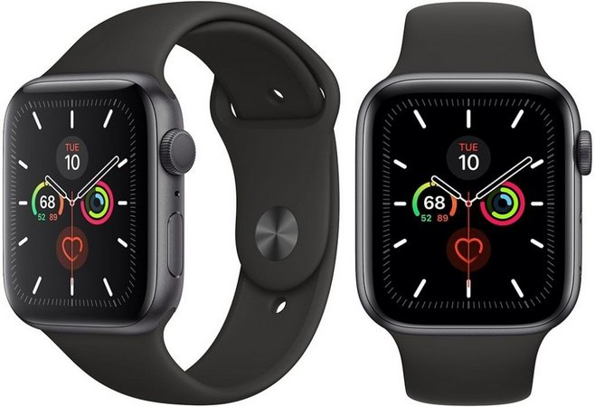

Apple Watch Series 5
Postado em 04 de maio de 2020 Você provavelmente vai pensar que estamos de bajulação com a Apple ou até mesmo recebendo para falar bem dos produtos dela – ainda mais depois dos nossos últimos reviews ressaltando a superioridade dos novos iPhones – mas é impossível negar o quanto o Apple Watch Series 5 é superior a qualquer outro smartwatch que já passou por aqui, apesar de não ser perfeito.
A Apple já vem fabricando relógios inteligentes há algum tempo, mais precisamente, 4 anos, e apesar da primeira geração ter uma usabilidade duvidosa – mesmo que tenha estabelecido um patamar para a época, a quinta geração é um salto considerável em relação a terceira, mas traz mudanças mínimas em relação a quarta